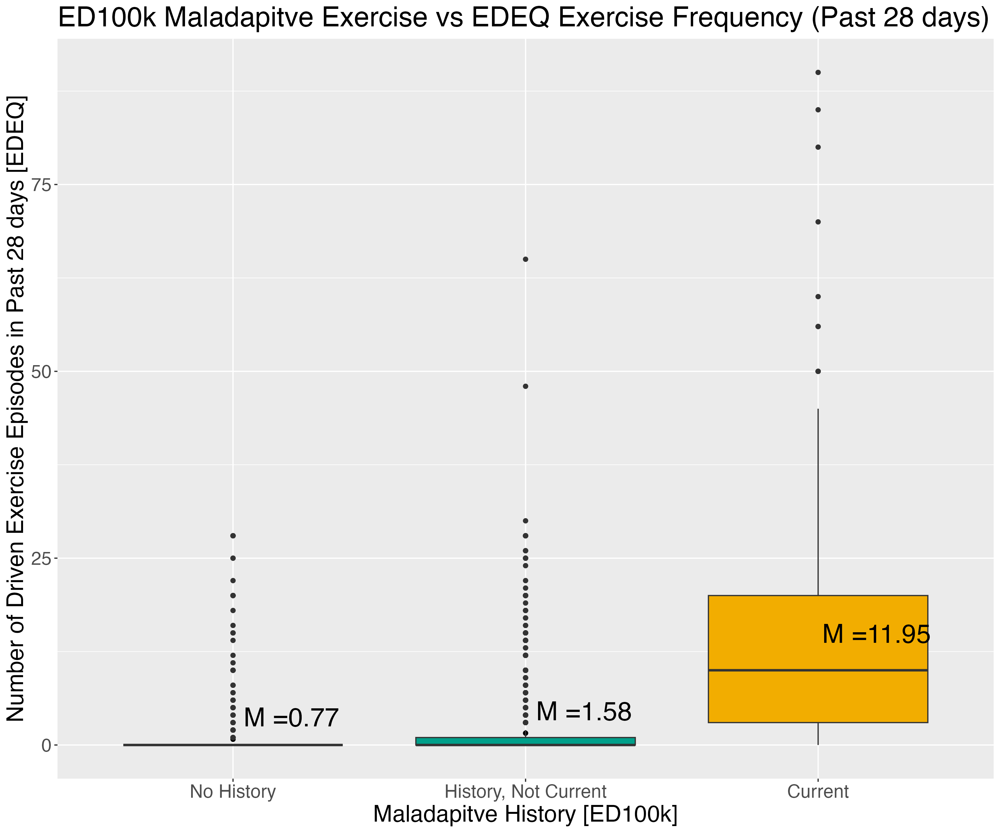
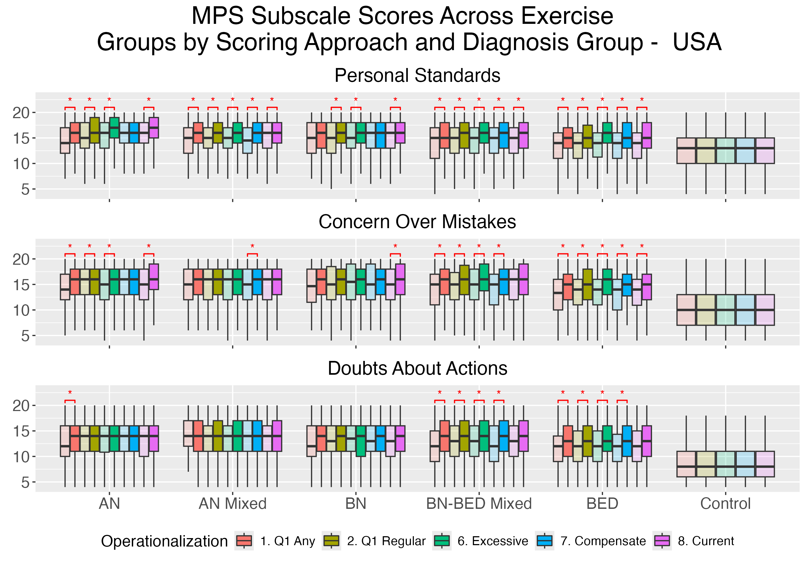

| **Variable** | **N = 8,775** |
|---|---|
| __Ethnicity__ | NA |
| Hispanic | 638 (7.3) |
| Non-Hispanic | 8,044 (92.7) |
| Unknown | 93 |
| __Gender Identity__ | NA |
| 0 | 461 (5.3) |
| 1 | 7,714 (88.3) |
| 2 | 564 (6.5) |
| Unknown | 36 |
| __Biological Sex__ | NA |
| Male | 387 (4.4) |
| Female | 8,385 (95.6) |
| Intersex | 3 (0.0) |
| __Race__ | NA |
| White | 7,536 (85.9) |
| Black | 316 (3.6) |
| Asian | 355 (4.0) |
| Other | 524 (6.0) |
| NaN | 44 (0.5) |
| __Age__ | 34.62 (13.32) |
| __Current BMI__ | 27.25 (11.01) |
| Unknown | 4 |
| __Eating Disorder Diagnosis__ | NA |
| AN | 3,199 (36.5) |
| AN Mixed | 1,815 (20.7) |
| BED | 914 (10.4) |
| BN | 1,061 (12.1) |
| BN-BED Mixed | 1,273 (14.5) |
| Control | 513 (5.8) |
Results
Sample Descriptives
Sociodemographic characteristics of the sample and frequency of eating disorder diagnosis groups are presented in Table 1
Preliminary Aim - Develop a scoring algorithm
Our first aim is to evaluate the uniqueness of various scoring approaches for ED100k exercise items to define maladaptive exercise history among individuals with EDs using this self-report measure. We specifically aim to optimize a set of items and scoring approach(es), derived from the original 12 ED100k exercise history items, which most concisely captures varying conceptualizations of maladaptive exercise history that are commonly present in EDs, including:
- A single-item assessment of any maladaptive exercise history (broad definition)
- A single-item assessment of a history of regular engagement in maladaptive exercise (narrow definition)
- Maladaptive exercise history with verified compulsive feature(s) (consistent with definitions of ‘compulsive & driven exercise’)
- Maladaptive exercise that has occurred regularly and interfered with life or health (consistent with definitions of ‘addictive exercise & exercise dependence’)
- Maladaptive exercise that has occurred very frequently for a period of time (e.g. almost every day for a period of at least one month; consistent with definitions of ‘excessive exercise’ that is also compulsive in nature)
- Exercise that is used to compensate for binge eating or overeating (consistent with definitions of ‘compensatory exercise’)
- Current Maladaptive Exercise Engagement
We will focus on evaluation of the incremental validity of scoring approaches and accompanying items beyond a single-item measure (Q1) of maladaptive exercise history. Based on results, we will refine a set of items and scoring approach(es) for examination of convergent and discriminant validity (Aim 2) and estimation of prevalence across diagnostic groups (Aim 3).
Scoring
The ED100k included 12 questions assessing maladaptive exercise. The first question, which all participants were asked, inquires as to whether individuals ever exercised to intentionally control weight and shape (Q1). Only those who endorsed EVER Exercising to intentionally control weight or shape were asked to respond to two additional questions which asked about exercise in more detail, including two questions (Q2, Q3) about whether individuals ever felt compelled to exercise and whether they felt uneasy or distressed if unable to exercise. In a third step, those who reported affirmatively to Q1 and ‘Yes’ to either Q2 or Q3 were additionally asked three questions (Q4-Q6) about whether exercise interfered with life activities or diet, along with questions regarding the onset (Q7), duration (Q8), and frequency (Q9) of their maladaptive exercise, along with whether they engaged in the behavior currently (Q10) and the last age at which they engaged in the behavior (Q11). In a separate section, all participants were asked whether they had ‘exercised excessively’ specifically to compensate for episodes of binge eating or overeating (Q12). During recoding, those (n = 1710) who reported no to Q1 were marked as ‘0’ for all follow-up questions, with the exception of ages (Q10-11), which were retained as missing. Those who reported that they had engaged in exercise to for weight and shape control but ‘No’ to both Q2 & Q3 (n = 198) were marked as ‘0’ for Q4-Q9. Frequencies for the 10 dichotomous/ordinal exercise items with imputed values based on skip patterns (see scoring) are provide in Supplemental Table 8. Median age of onset for those reporting any compulsive exercise in the sample was 16 years and the median age of last report of compulsive exercise was 23 years. Among those who reported any compulsive exercise, 46.94% reported that this was an ongoing symptom.
Scoring algorithms for each subconstruct are presented in Table 2.
| Scoring Approach | Criteria | Nested Within |
|
Participant endorses that they have exercised excessively (e.g. felt compelled to exercise, felt uneasy or distressed if unable to exercise) to control weight or shape ‘A few times’ or more | NA |
|
Participant endorses that they have exercised excessively (e.g. felt compelled to exercise, felt uneasy or distressed if unable to exercise) to control weight or shape ‘more often’ | 1 |
|
Q1 Broad (#1) Ever felt compelled to exercise == ‘YES’ OR Ever uneasy or distressed when unable to exercise == ‘YES’ |
1 |
|
Q1 Narrow (#1, #2) Ever felt compelled to exercise == ‘YES’ OR Ever uneasy or distressed when unable to exercise == ‘YES’ |
1, 2 |
|
Q1 Narrow (#1,#2) Driven/Compulsive symptom verified (#3) Duration >= 3 months 1 or more of the following: -caused to change eating habits -decline opportunities to be with friends -exercised despite illness or injury |
1, 2, 3 |
|
Q1 Narrow (#1,#2) Driven/Compulsive symptom verified (#3) Duration >= 1 month Frequency = ‘Every Day’ or ‘Nearly Every Day’ |
1, 2, 3 |
|
Have you ever used any of the following to compensate for episodes of binge eating or overeating? (Mark all that apply) (choice=Exercised excessively (e.g., felt compelled to exercise, felt uneasy or distressed if unable to exercise)) | NA |
|
Q1 Broad (#1) Driven/Compulsive symptom verified Do you currently exercise to control weight and shape AND Feel compelled to exercise OR distress if unable to exercise? == ‘YES’ |
1, 3 |
Aim 1. Evaluate patterns of response across multiple scoring methods – to identify the degree to which scoring methods requiring different item-level endorsement, consistent with varying definitions of maladaptive exercise, result in overlapping membership or capture distinct groups
We hypothesize that Q1 Broad (Approach #1) will have high positive predictive value (PPV; > 0.80) for broad compulsive exercise (Q1 compulsive symptom verification, Approach #3), moderate PPV (>0.50) for Q1 Narrow (#2) along with approaches nested within Q1 Narrow (regular compulsive exercise (#4), addictive exercise (#5), and excessive exercise (#6)). and moderate PPV for compensatory exercise (#7). As individuals in the sample range in ED recovery status, we expect Q1 Broad to have a low PPV ( <0.40) for current maladaptive exercise (#8).
| Term | Definition | Formula |
|---|---|---|
| Positive Predictive Value | Probability of having Trait 2 if Trait 1 is endorsed | True Positives / (True Positives + False Positives) |
| Negative Predictive Value | Probability of NOT having Trait 2 if Trait 1 is NOT endorsed | True Negatives/ (True Negatives + False Negatives) |
| Specificity | Proportion of those without Trait 2 who are correctly assigned ‘NO’ value for Trait 2 based on Trait 1 endorsement | True Negatives/ (True Negatives + False Positives) |
| Sensitivity | Proportion of those with Trait 2 who are correctly assigned as having this trait based on Trait 1 endorsement | True Positives / (True Positives + False Negatives) |
| Accuracy | Total number of correct allocations (both positive and negative) of Trait 2 based on Trait 1 | (True Negatives + True Positives)/ Total N |
We hypothesize that Q1 Narrow (Approach # 2) will be likely to meet criteria for compulsive exercise (#3), regular compulsive exercise (#4) exercise addiction (#5), and excessive exercise (#6) (high PPV; > 0.80), and moderately likely to meet criteria for compensatory exercise (#7) (moderate PPV; > 0.50). As many individuals in the sample are in ED recovery, we expect Q1 Broad to have a lower PPV for current maladaptive exercise (#8; < 0.50).
Figure 1 presents the proportion of the full sample along with sub-samples (horizontal axis) meeting criteria for each (sub)construct (vertical axis).

Accuracy of Q1 (Approaches 1-2) to detect further maladaptive exercise symptoms
Overall, there was high convergent validity for Q1 with Q2-Q6. Specifically, individuals eating disorders who endorse Q1 Broad (Approach #1) are highly likely to confirm either feeling compelled to exercise or distressed when unable to exercise (#3; high PPV). As hypothesized, Q1 Broad (#1) had more moderate PPV for approaches #4-7 (compulsive/driven [narrow], addictive, excessive, compulsive).
Among those meeting Q1 Narrow (#2), individuals were likely to engage in this behavior for a substantive period of time – 98.53% of those meeting Q1 Narrow reported maladaptive exercise for a duration of > 3 months; a time period of equivalent to diagnostic levels of other intentional weight control behaviors. Those meeting Q1 Narrow were also highly likely to report symptoms consistent with definitions of both compulsive/driven (high PPV for #3-4), addictive (high PPV for #5) exercise. Q1 Narrow PPV for predicting excessive exercise (#6) was also high (>0.80), but less so than approaches #3-5.
Figure 2 reports full metrics on the utility of Q1 Broad and Q1 Narrow to capture definitions in approaches #3-8. The sensitivity and negative predictive values of Q1 Broad detection of approaches #3-6 were forced to 1.0 by definition. Overall accuracy metrics of Q1 Broad predicting #3, and Q1 Narrow predicting #4-5 suggest that additional criteria added to these approaches are not necessary for defining maladaptive exercise that (1) verifies compulsive/driven symptoms and (2) identifies significant duration and interference with life and/or health among individuals with EDs. Overall, the vast majority of individuals with eating disorders who reporting regular exercise for weight loss to control weight and shape in Q1 go on to report that this exercise was compulsive and that they also experienced life interfering sequelae of this behavior. Further, regarding specific addictive exercise symptoms, the modal number of exercise interference items was all 3.
While Q1 accurately defined those experiencing compulsive and addictive exercise (Approaches #3-5) with little additional information provided from follow-up questions, the same was not true for excessive exercise (#6) and compensatory exercise (#7) – additional questions may be necessary to define excessive and compensatory exercise with the highest levels of accuracy, and endorsement of these constructs do not entirely overlap with endorsement of other maladaptive exercise symptoms. While PPV and overall accuracy for Q1 Broad predicting compensatory accuracy (#7) were moderate, suggesting that not all individuals who endorse Q1 Broad also endorse compensatory exercise, sensitivity was high – almost all of those who endorsed compensatory exercise also endorsed Q1 Broad. Overall accuracy of both Q1 Broad and Q1 Narrow in predicting compensatory exercise (#7) was moderate, again suggesting that compensatory exercise occurs in only a subsample of those with maladaptive exercise, and that this question provides utility in the scale. For further analysis in Aims 2-3, scoring approaches #1,2,6,7, & 8 are retained, as they provide unique and discriminable information about maladaptive exercise patterns.

Aim 2. Evaluate Convergent and Discriminant Validity between ED100k Scoring Approaches and: Current Compulsive Exercise, Perfectionism, and OCD symptoms
H2a: Individuals who do meet Q1 Broad (#1), Q1 Narrow (#2), or Current Maladaptive Exercise (#8), will not report current compulsive/driven exercise (high negative predictive value [NPV]; >90% for 1. Current driven exercise to manage weight/shape on the EDEQ, 2. Current compulsive exercise at clinical cutoff on the CET). NPV will be lower for Excessive Exercise (#6) and compensatory exercise (#7), as these operationalizations capture smaller subsamples which may exclude those with current driven/compulsive exercise. PPV, Sensitivity, Specificity, and overall accuracy for current maldaptive exercise (#8) predicting current CET and EDEQ-assessed exercise will be moderate-to-high, supporting this single-item assessment of current maladaptive exercise on the ED100k.
Figure 3 demonstrates confusion matrix components for ED100k scoring approaches and current compulsive/driven exercise endorsement assessed by 1. meeting CET clinical cutoff and 2. endorsement of EDEQ (any and at least weekly) driven exercise in the past 28 days. As hypothesized, approaches #1, 2, and 8 had a high NPV: those who did not endorse any history of, rare history of, or no current maladaptive exercise were unlikely to endorse current compulsive or driven exercise on the CET and EDEQ. NPVs for both CET clinical cutoff and weekly or more EDEQ driven exercise (4x or more over the past 28 days) were > 0.9. NPVs were slightly lower for reports of any EDEQ driven exercise over the past 28 days (~ 0.85), indicating that some individuals who endorse no history of compulsive exercise may engage in this behavior at relatively low frequency.
Accuracy of #1, #2, #6, and #7 in relation to current measures of driven/compulsive exercise were moderate, indicating only a poriton of individuals who reported history of maladaptive exercise – via various operationalizations - on the ED100k were engaging in compulsive/driven at the time of assessment. PPV was highest for #1 (>0.95), and in a moderate-to-high range for #2,6,7, & 8, indicating that a portion of individuals who report current maladaptive exericse on the CET or EDEQ do not report history of driven exercise on the ED100k operationalizations #2, 6, 7, or 8. PPV for compensatory exericse was lowest, which was expected given that the CET and EDEQ do not capture compensatory motivations. Overall accuracy metrics were highest for scoring method #8 (current), ranging from 0.76 for the CET to 0.84 for weekly exercise on the EDEQ, and generally supporting the ED100k current exercise operationalization as a rough indicator of current compulsive exercise.

Comparisons of continuous values of current exercise measures (external validation) across those with no history of maladaptive exericse,istory of, but not current, maladaptive exercise (Endorsing #2 but not #8), and those with current maladaptive exercise (#8) on the ED100k
H2b: Comparing across groups who report no history of maladaptive exercise, history of, but not current, maladaptive exercise (Endorsing #2 but not #8), and those with current maladaptive exercise (#8) on the ED100k, those who report ED100k current maladaptive exercise will report highest CET scores (total, and all subscales except for exercise enjoyment) and more driven exercise days in the past 28 on the EDEQ. Those reporting history of, but not current, maladaptive exercise will report intermediate CET scores and EDEQ exercise days – higher than those reporting no history of maladaptive exercise on the ED100k but lower than those reporting current maladaptive exercise.
Overall, 21.8% of the sample reported No history of maladaptive exercise, 41.49% reported a history of maladaptive exercise that was not current, and 36.7% reported current maladaptive exercise.
Boxplots with median standardized scores on all CET subscales along with CET total score is presented in Figure 4. To formally test the hypothesis that those with reporting ED100k current maladaptive exercise would also report the highest scores on the CET, we completed a series of ANOVAs comparing those with reporting no maladaptive exercise, history of maladaptive exercise only (Meeting Scoring Approach #2 but not #8), and current maladaptive exercise (Meeting Approach #8) on current CET scores. Table 3 reports ANOVA output for each CET subscale, comparing across the three groups of individuals who report no maladaptive exercise, maladaptive exercise history but not current maladaptive exercise (#2 but NOT #8), and both history and current maladaptive exercise (#8) on the ED100k. All omnibus tests reach significance.

| Model | term | df | sumsq | meansq | statistic | p.value |
|---|---|---|---|---|---|---|
| Enjoyment | ED100k History/Current Compulsive Exercise | 2 | 1598.04 | 799.02 | 456.00 | 2.173e-183 |
| Enjoyment | Residual | 5274 | 9241.36 | 1.75 | NA | NA |
| Mood Improve | ED100k History/Current Compulsive Exercise | 2 | 1598.92 | 799.46 | 577.21 | 1.341e-227 |
| Mood Improve | Residual | 5321 | 7369.83 | 1.39 | NA | NA |
| Avoidance | ED100k History/Current Compulsive Exercise | 2 | 4631.29 | 2315.65 | 1785.85 | 0.000e+00 |
| Avoidance | Residual | 5294 | 6864.52 | 1.30 | NA | NA |
| Rigidity | ED100k History/Current Compulsive Exercise | 2 | 3581.39 | 1790.70 | 1160.58 | 0.000e+00 |
| Rigidity | Residual | 5268 | 8128.13 | 1.54 | NA | NA |
| Wt Control | ED100k History/Current Compulsive Exercise | 2 | 2330.23 | 1165.11 | 910.11 | 0.000e+00 |
| Wt Control | Residual | 5325 | 6817.03 | 1.28 | NA | NA |
| Total | ED100k History/Current Compulsive Exercise | 2 | 21490.55 | 10745.28 | 224.68 | 9.797e-96 |
| Total | Residual | 8235 | 393833.63 | 47.82 | NA | NA |
Table 4 presents specific contrasts between each group, using a Tukey’s HSD approach with an adjusted alpha to compute confidence intervals of 0.0028 - accounting for 18 contrasts. All contrasts reach significance (confidence intervals of differences not overlapping ‘0’). Cohen’s D effects suggest a pattern of moderate effect size when comparing those with no history of maladaptive exercise to those with a history, but not current, maladaptive exercise and when comparing those with history vs. current maladaptive exercise. Comparison of those with no history of maladaptive exercise vs. current maladaptive exercise (#8) consistently demonstrated large effects. For all subscales, except for the (lack of) enjoyment subscale, effects indicated that those with current maladaptive exercise scored highest, while those with no history of maladaptive exercise scored the highest on the lack of exercise enjoyment subscale.
| Variable | Contrast | Difference | CohensD |
|---|---|---|---|
| Enjoy | No vs Hx of Exercise | -0.933 ( -1.121, -0.745 ) | 0.665 |
| Enjoy | No vs. Current Exercise | -1.588 ( -1.779, -1.397 ) | 1.281 |
| Enjoy | Hx vs. Current Exercise | -0.655 ( -0.797, -0.513 ) | 0.496 |
| Mood Improve | No vs Hx of Exercise | 0.798 ( 0.632, 0.964 ) | -0.631 |
| Mood Improve | No vs. Current Exercise | 1.544 ( 1.376, 1.712 ) | -1.341 |
| Mood Improve | Hx vs. Current Exercise | 0.747 ( 0.62, 0.874 ) | -0.663 |
| Rigidity | No vs Hx of Exercise | 0.816 ( 0.639, 0.993 ) | -0.633 |
| Rigidity | No vs. Current Exercise | 2.176 ( 1.997, 2.355 ) | -1.830 |
| Rigidity | Hx vs. Current Exercise | 1.36 ( 1.226, 1.494 ) | -1.094 |
| Wt Control | No vs Hx of Exercise | 0.705 ( 0.546, 0.864 ) | -0.572 |
| Wt Control | No vs. Current Exercise | 1.768 ( 1.606, 1.93 ) | -1.743 |
| Wt Control | Hx vs. Current Exercise | 1.063 ( 0.941, 1.185 ) | -0.941 |
| Avoidance | No vs Hx of Exercise | 0.839 ( 0.677, 1.001 ) | -0.788 |
| Avoidance | No vs. Current Exercise | 2.427 ( 2.264, 2.59 ) | -2.142 |
| Avoidance | Hx vs. Current Exercise | 1.588 ( 1.466, 1.71 ) | -1.331 |
| Total | No vs Hx of Exercise | 1.494 ( 0.716, 2.272 ) | -0.246 |
| Total | No vs. Current Exercise | 4.213 ( 3.419, 5.007 ) | -0.574 |
| Total | Hx vs. Current Exercise | 2.719 ( 2.119, 3.319 ) | -0.378 |
The proportion of individuals meeting the clinical cutoff for current compulsive exercise on the CET varied as expected by endorsement of historical and current endorsement of maladaptive exercise on the ED100k. Only 4.62% of individuals who reported no history of maladaptive exercise met current CET clinical cutoff, while 18.45% of those reporting history, but not current maladaptive exercise (#2 but not #8) met clinical cutoff on the CET, and 63.51% of individuals meeting current maladaptive exercise (#8) on the ED100k met clinical cutoff for maladaptive exercise on the CET. Using a multinomial logistic regression approach with ‘No Maladaptive Exercise History’ on the ED100k coded as the reference category, those reporting maladaptive exercise history, but not current maladaptive exercise had an odds ratio of 4.67 and those reporting current maladaptive exercise had an odds ratio of 35.95, indicating significant convergent validity of reports of current maladaptive exercise on the ED100k and meeting clinical cutoff on the 24-item CET.
Regarding the number of days in the past 28 that participants reported engaging in driven exercise on the EDEQ, outcomes were zero-inflated in the ‘No History of Maladaptive Exercise’ and ‘History but No Current Maladaptive Exercise’ groups (see Figure 5).

A zero-inflated Poisson regression model compared those with “History, but Not Current’ and those with ‘Current Maladaptive Exercise’ to the ‘No History of Maladaptive Exercise’ (reference) group on number of days with driven exercise in the past month. Results are presented in Table 5 (including odds ratios (ORs) for the zero portion of the model and incident risk ratios (IRRs) for the count portion). Results indicate that those who report current maladaptive exercise on the ED100k are less likely to have zero values for EDEQ-assessed exercise in the past 28 days, and report higher counts of exercise days when they do exercise. Those reporting history of, but not current, maladaptive exercise on the ED100k are similarly less likely to report zero days of driven exercise on the EDEQ as compared to those who report no history of maladaptive exercise, though the count portion of the model indicates that those reporting history, but not current, maladaptive exercise are reporting low numbers of exercise days when it occurs, lower than those who report no history of maladaptive exercise.
| Term | Model Part | Estimate | Std. Error | IRR | OR | z value | Pr(>|z|) |
|---|---|---|---|---|---|---|---|
| (Intercept) | Count | 2.070 | 0.033 | 7.928 | NA | 62.434 | 0.00e+00 |
| History vs. No History | Count | -0.258 | 0.036 | 0.772 | NA | -7.148 | 8.77e-13 |
| Current vs. No History | Count | 0.601 | 0.034 | 1.824 | NA | 17.871 | 1.97e-71 |
| (Intercept) | Zero | 2.230 | 0.098 | NA | 9.301 | 22.724 | 2.59e-114 |
| History vs. No History | Zero | -1.196 | 0.106 | NA | 0.302 | -11.243 | 2.50e-29 |
| Current vs. No History | Zero | -3.754 | 0.110 | NA | 0.023 | -34.108 | 5.62e-255 |
OCD Symptoms and Perfectionism
In addition to convergent validity across current exercise measures, we also examined both convergent and discriminant validity by examining ED100k scoring approaches on subscales of the Frost MPS indexing maladaptive perfectionism along with subscale and total scores for the OCI-R.
H2c: Within diagnostic groups - those endorsing scoring approaches #1, #2, #6, and #8 will report higher perfectionism and OCD symptoms. Those endorsing compenstory exercise (#7) will not report higher perfectionism or OCD symptoms than those who do not t-tests within diagnostic groups comparing frost MPS and OCI-R/OCI-12 subscale scores across those with vs. without history of maladaptive exercise, expected p < 0.05 adjusted for multiple comparisons across subscales. We also include calculation of Cohen’s d effect sizes.
Graphs depicting means and standard deviations for OCI total and subscale scores within diagnostic groups are presented in Figure 6. A table showing t-tests and Cohen’s D effect sizes for comparisons of subscale and total OCI scores within diagnostic groups is presented in Supplemental Table 6. Effect sizes were small-to-moderate (Range = 0.003-NA; Median = NA). Using operationalization #1, those with maladaptive (vs. without) exercise had higher OCI washing, checking, order, and Total scores within BED, and higher order, obsession, and total scores within the BN-BED Mixed category. Using operationalization # 2, those with vs without maladaptive exercise had higher order (BN-BED mixed; BED), obsession (BED), and total (BED) scores. Using operationalization #6, those with vs without excessive exercise had higher order (AN). Using operationalization #7, those with vs. without compensatory exercise had higher order (BED), obsessions (AN; BN-BED Mixed), and Total (BED). Using #8, those with current maladaptive exercise reported higher washing (AN, BN, BED), checking (AN, BN, BED), Order (AN, AN Mixed, BN, BED), Obsessions (AN, AN Mixed, BN), and Total (AN, AN-Mixed, BN, BED) OCI scores.
| Mean Diff | t | Case Status | Cohens D | p | ex_var | oci_var | FDR p val |
|---|---|---|---|---|---|---|---|
| -0.642 | -2.870 | AN | 0.227 | 4.61e-03 | 1. Q1 Any | Washing | 1.30e-02 |
| -0.579 | -2.477 | AN | 0.202 | 1.42e-02 | 1. Q1 Any | Checking | 3.19e-02 |
| -0.903 | -3.101 | AN | 0.257 | 2.25e-03 | 1. Q1 Any | Order | 8.64e-03 |
| -0.588 | -1.838 | AN | 0.156 | 6.77e-02 | 1. Q1 Any | Obsessions | 1.10e-01 |
| -2.862 | -3.536 | AN | 0.286 | 5.20e-04 | 1. Q1 Any | Total | 2.78e-03 |
| -0.519 | -3.890 | AN | 0.179 | 1.06e-04 | 2. Q1 Regular | Washing | 7.36e-04 |
| -0.641 | -4.936 | AN | 0.226 | 9.13e-07 | 2. Q1 Regular | Checking | 1.90e-05 |
| -0.635 | -3.933 | AN | 0.183 | 8.90e-05 | 2. Q1 Regular | Order | 6.54e-04 |
| -0.224 | -1.260 | AN | 0.060 | 2.08e-01 | 2. Q1 Regular | Obsessions | 2.68e-01 |
| -2.059 | -4.411 | AN | 0.204 | 1.12e-05 | 2. Q1 Regular | Total | 1.17e-04 |
| -0.433 | -3.469 | AN | 0.147 | 5.33e-04 | 6. Excessive | Washing | 2.78e-03 |
| -0.589 | -4.801 | AN | 0.204 | 1.70e-06 | 6. Excessive | Checking | 3.04e-05 |
| -0.672 | -4.504 | AN | 0.192 | 7.06e-06 | 6. Excessive | Order | 8.83e-05 |
| -0.174 | -1.082 | AN | 0.047 | 2.79e-01 | 6. Excessive | Obsessions | 3.35e-01 |
| -1.891 | -4.323 | AN | 0.184 | 1.62e-05 | 6. Excessive | Total | 1.56e-04 |
| 0.098 | 0.672 | AN | 0.034 | 5.02e-01 | 7. Compensate | Washing | 5.46e-01 |
| -0.287 | -1.896 | AN | 0.097 | 5.84e-02 | 7. Compensate | Checking | 9.93e-02 |
| -0.108 | -0.594 | AN | 0.030 | 5.53e-01 | 7. Compensate | Order | 5.91e-01 |
| -0.554 | -2.837 | AN | 0.147 | 4.68e-03 | 7. Compensate | Obsessions | 1.30e-02 |
| -0.870 | -1.646 | AN | 0.084 | 1.00e-01 | 7. Compensate | Total | 1.49e-01 |
| -0.726 | -5.722 | AN | 0.242 | 1.22e-08 | 8. Current | Washing | 5.08e-07 |
| -0.650 | -5.240 | AN | 0.220 | 1.77e-07 | 8. Current | Checking | 4.42e-06 |
| -0.916 | -6.152 | AN | 0.258 | 9.15e-10 | 8. Current | Order | 5.72e-08 |
| -0.839 | -5.392 | AN | 0.226 | 7.72e-08 | 8. Current | Obsessions | 2.41e-06 |
| -3.137 | -7.189 | AN | 0.303 | 9.10e-13 | 8. Current | Total | 1.14e-10 |
| -0.268 | -0.823 | AN Mixed | 0.088 | 4.12e-01 | 1. Q1 Any | Washing | 4.60e-01 |
| 0.175 | 0.530 | AN Mixed | 0.057 | 5.97e-01 | 1. Q1 Any | Checking | 6.27e-01 |
| -0.115 | -0.286 | AN Mixed | 0.031 | 7.76e-01 | 1. Q1 Any | Order | 7.89e-01 |
| 0.381 | 0.943 | AN Mixed | 0.100 | 3.48e-01 | 1. Q1 Any | Obsessions | 3.99e-01 |
| 0.198 | 0.166 | AN Mixed | 0.018 | 8.69e-01 | 1. Q1 Any | Total | 8.76e-01 |
| -0.270 | -1.513 | AN Mixed | 0.091 | 1.31e-01 | 2. Q1 Regular | Washing | 1.84e-01 |
| 0.011 | 0.057 | AN Mixed | 0.003 | 9.55e-01 | 2. Q1 Regular | Checking | 9.55e-01 |
| -0.188 | -0.852 | AN Mixed | 0.052 | 3.95e-01 | 2. Q1 Regular | Order | 4.45e-01 |
| -0.230 | -0.983 | AN Mixed | 0.060 | 3.26e-01 | 2. Q1 Regular | Obsessions | 3.77e-01 |
| -0.654 | -0.995 | AN Mixed | 0.061 | 3.20e-01 | 2. Q1 Regular | Total | 3.74e-01 |
| -0.225 | -1.312 | AN Mixed | 0.075 | 1.90e-01 | 6. Excessive | Washing | 2.53e-01 |
| -0.152 | -0.866 | AN Mixed | 0.049 | 3.87e-01 | 6. Excessive | Checking | 4.40e-01 |
| -0.474 | -2.316 | AN Mixed | 0.132 | 2.07e-02 | 6. Excessive | Order | 4.17e-02 |
| -0.237 | -1.081 | AN Mixed | 0.062 | 2.80e-01 | 6. Excessive | Obsessions | 3.35e-01 |
| -1.061 | -1.719 | AN Mixed | 0.098 | 8.58e-02 | 6. Excessive | Total | 1.34e-01 |
| -0.328 | -1.589 | AN Mixed | 0.111 | 1.13e-01 | 7. Compensate | Washing | 1.64e-01 |
| -0.154 | -0.706 | AN Mixed | 0.051 | 4.80e-01 | 7. Compensate | Checking | 5.26e-01 |
| -0.305 | -1.177 | AN Mixed | 0.085 | 2.40e-01 | 7. Compensate | Order | 3.03e-01 |
| -0.138 | -0.494 | AN Mixed | 0.036 | 6.22e-01 | 7. Compensate | Obsessions | 6.43e-01 |
| -0.909 | -1.167 | AN Mixed | 0.084 | 2.44e-01 | 7. Compensate | Total | 3.05e-01 |
| -0.276 | -1.597 | AN Mixed | 0.090 | 1.10e-01 | 8. Current | Washing | 1.62e-01 |
| -0.402 | -2.320 | AN Mixed | 0.131 | 2.05e-02 | 8. Current | Checking | 4.17e-02 |
| -0.609 | -2.998 | AN Mixed | 0.169 | 2.77e-03 | 8. Current | Order | 9.36e-03 |
| -0.611 | -2.830 | AN Mixed | 0.159 | 4.74e-03 | 8. Current | Obsessions | 1.30e-02 |
| -1.886 | -3.080 | AN Mixed | 0.174 | 2.12e-03 | 8. Current | Total | 8.64e-03 |
| -0.601 | -1.926 | BN | 0.212 | 5.67e-02 | 1. Q1 Any | Washing | 9.84e-02 |
| -0.947 | -2.938 | BN | 0.322 | 4.00e-03 | 1. Q1 Any | Checking | 1.28e-02 |
| -0.624 | -1.425 | BN | 0.165 | 1.57e-01 | 1. Q1 Any | Order | 2.16e-01 |
| -0.603 | -1.341 | BN | 0.156 | 1.83e-01 | 1. Q1 Any | Obsessions | 2.49e-01 |
| -2.859 | -2.316 | BN | 0.264 | 2.24e-02 | 1. Q1 Any | Total | 4.44e-02 |
| -0.510 | -2.325 | BN | 0.173 | 2.04e-02 | 2. Q1 Regular | Washing | 4.17e-02 |
| -0.456 | -1.967 | BN | 0.148 | 4.97e-02 | 2. Q1 Regular | Checking | 8.75e-02 |
| -0.309 | -1.079 | BN | 0.082 | 2.81e-01 | 2. Q1 Regular | Order | 3.35e-01 |
| -0.333 | -1.147 | BN | 0.086 | 2.52e-01 | 2. Q1 Regular | Obsessions | 3.10e-01 |
| -1.648 | -1.988 | BN | 0.150 | 4.73e-02 | 2. Q1 Regular | Total | 8.45e-02 |
| -0.546 | -2.431 | BN | 0.182 | 1.53e-02 | 6. Excessive | Washing | 3.36e-02 |
| -0.497 | -2.163 | BN | 0.161 | 3.09e-02 | 6. Excessive | Checking | 5.94e-02 |
| -0.351 | -1.252 | BN | 0.093 | 2.11e-01 | 6. Excessive | Order | 2.69e-01 |
| -0.330 | -1.143 | BN | 0.085 | 2.53e-01 | 6. Excessive | Obsessions | 3.10e-01 |
| -1.743 | -2.114 | BN | 0.157 | 3.49e-02 | 6. Excessive | Total | 6.61e-02 |
| -0.400 | -1.565 | BN | 0.137 | 1.19e-01 | 7. Compensate | Washing | 1.69e-01 |
| -0.464 | -1.792 | BN | 0.155 | 7.41e-02 | 7. Compensate | Checking | 1.19e-01 |
| -0.210 | -0.640 | BN | 0.056 | 5.23e-01 | 7. Compensate | Order | 5.64e-01 |
| -0.148 | -0.434 | BN | 0.038 | 6.64e-01 | 7. Compensate | Obsessions | 6.80e-01 |
| -1.260 | -1.317 | BN | 0.116 | 1.89e-01 | 7. Compensate | Total | 2.53e-01 |
| -0.757 | -3.402 | BN | 0.253 | 7.10e-04 | 8. Current | Washing | 3.29e-03 |
| -0.885 | -3.879 | BN | 0.288 | 1.15e-04 | 8. Current | Checking | 7.57e-04 |
| -0.787 | -2.834 | BN | 0.209 | 4.73e-03 | 8. Current | Order | 1.30e-02 |
| -0.522 | -1.829 | BN | 0.135 | 6.78e-02 | 8. Current | Obsessions | 1.10e-01 |
| -2.984 | -3.656 | BN | 0.271 | 2.75e-04 | 8. Current | Total | 1.72e-03 |
| -0.401 | -1.749 | BN-BED Mixed | 0.140 | 8.13e-02 | 1. Q1 Any | Washing | 1.29e-01 |
| -0.598 | -2.598 | BN-BED Mixed | 0.205 | 9.80e-03 | 1. Q1 Any | Checking | 2.40e-02 |
| -0.981 | -3.479 | BN-BED Mixed | 0.278 | 5.74e-04 | 1. Q1 Any | Order | 2.87e-03 |
| -1.348 | -4.649 | BN-BED Mixed | 0.372 | 4.89e-06 | 1. Q1 Any | Obsessions | 7.64e-05 |
| -3.313 | -4.065 | BN-BED Mixed | 0.326 | 6.07e-05 | 1. Q1 Any | Total | 5.19e-04 |
| -0.112 | -0.578 | BN-BED Mixed | 0.039 | 5.63e-01 | 2. Q1 Regular | Washing | 5.96e-01 |
| -0.313 | -1.568 | BN-BED Mixed | 0.105 | 1.17e-01 | 2. Q1 Regular | Checking | 1.68e-01 |
| -0.651 | -2.729 | BN-BED Mixed | 0.182 | 6.47e-03 | 2. Q1 Regular | Order | 1.72e-02 |
| -0.464 | -1.886 | BN-BED Mixed | 0.126 | 5.96e-02 | 2. Q1 Regular | Obsessions | 9.93e-02 |
| -1.508 | -2.177 | BN-BED Mixed | 0.145 | 2.97e-02 | 2. Q1 Regular | Total | 5.80e-02 |
| -0.218 | -1.049 | BN-BED Mixed | 0.074 | 2.95e-01 | 6. Excessive | Washing | 3.48e-01 |
| -0.369 | -1.678 | BN-BED Mixed | 0.120 | 9.40e-02 | 6. Excessive | Checking | 1.42e-01 |
| -0.730 | -2.835 | BN-BED Mixed | 0.202 | 4.74e-03 | 6. Excessive | Order | 1.30e-02 |
| -0.518 | -2.013 | BN-BED Mixed | 0.141 | 4.45e-02 | 6. Excessive | Obsessions | 8.18e-02 |
| -1.868 | -2.528 | BN-BED Mixed | 0.179 | 1.17e-02 | 6. Excessive | Total | 2.71e-02 |
| -0.105 | -0.505 | BN-BED Mixed | 0.036 | 6.14e-01 | 7. Compensate | Washing | 6.40e-01 |
| -0.348 | -1.678 | BN-BED Mixed | 0.118 | 9.38e-02 | 7. Compensate | Checking | 1.42e-01 |
| -0.749 | -3.019 | BN-BED Mixed | 0.211 | 2.63e-03 | 7. Compensate | Order | 9.13e-03 |
| -0.938 | -3.614 | BN-BED Mixed | 0.255 | 3.27e-04 | 7. Compensate | Obsessions | 1.89e-03 |
| -2.115 | -2.879 | BN-BED Mixed | 0.204 | 4.14e-03 | 7. Compensate | Total | 1.29e-02 |
| -0.169 | -0.812 | BN-BED Mixed | 0.058 | 4.17e-01 | 8. Current | Washing | 4.61e-01 |
| -0.278 | -1.286 | BN-BED Mixed | 0.092 | 1.99e-01 | 8. Current | Checking | 2.62e-01 |
| -0.677 | -2.613 | BN-BED Mixed | 0.188 | 9.22e-03 | 8. Current | Order | 2.31e-02 |
| -0.337 | -1.276 | BN-BED Mixed | 0.091 | 2.03e-01 | 8. Current | Obsessions | 2.64e-01 |
| -1.401 | -1.889 | BN-BED Mixed | 0.135 | 5.94e-02 | 8. Current | Total | 9.93e-02 |
| -0.617 | -3.212 | BED | 0.249 | 1.39e-03 | 1. Q1 Any | Washing | 6.21e-03 |
| -0.886 | -4.480 | BED | 0.347 | 8.85e-06 | 1. Q1 Any | Checking | 1.01e-04 |
| -0.883 | -3.408 | BED | 0.264 | 6.96e-04 | 1. Q1 Any | Order | 3.29e-03 |
| -0.841 | -3.073 | BED | 0.238 | 2.20e-03 | 1. Q1 Any | Obsessions | 8.64e-03 |
| -3.245 | -4.575 | BED | 0.356 | 5.73e-06 | 1. Q1 Any | Total | 7.96e-05 |
| -0.917 | -3.114 | BED | 0.338 | 2.20e-03 | 2. Q1 Regular | Washing | 8.64e-03 |
| -0.912 | -3.092 | BED | 0.330 | 2.35e-03 | 2. Q1 Regular | Checking | 8.64e-03 |
| -1.067 | -2.862 | BED | 0.301 | 4.77e-03 | 2. Q1 Regular | Order | 1.30e-02 |
| -1.465 | -4.025 | BED | 0.410 | 8.47e-05 | 2. Q1 Regular | Obsessions | 6.54e-04 |
| -4.377 | -4.115 | BED | 0.442 | 6.23e-05 | 2. Q1 Regular | Total | 5.19e-04 |
| -0.735 | -2.020 | BED | 0.263 | 4.63e-02 | 6. Excessive | Washing | 8.39e-02 |
| -0.720 | -2.078 | BED | 0.260 | 4.03e-02 | 6. Excessive | Checking | 7.52e-02 |
| -0.767 | -1.700 | BED | 0.213 | 9.23e-02 | 6. Excessive | Order | 1.42e-01 |
| -1.042 | -2.492 | BED | 0.295 | 1.43e-02 | 6. Excessive | Obsessions | 3.19e-02 |
| -3.278 | -2.593 | BED | 0.328 | 1.10e-02 | 6. Excessive | Total | 2.59e-02 |
| -0.312 | -1.478 | BED | 0.123 | 1.40e-01 | 7. Compensate | Washing | 1.94e-01 |
| -0.569 | -2.649 | BED | 0.219 | 8.37e-03 | 7. Compensate | Checking | 2.14e-02 |
| -0.681 | -2.355 | BED | 0.198 | 1.90e-02 | 7. Compensate | Order | 4.03e-02 |
| -0.721 | -2.418 | BED | 0.201 | 1.60e-02 | 7. Compensate | Obsessions | 3.45e-02 |
| -2.302 | -2.903 | BED | 0.244 | 3.90e-03 | 7. Compensate | Total | 1.28e-02 |
| -0.782 | -2.611 | BED | 0.291 | 1.00e-02 | 8. Current | Washing | 2.40e-02 |
| -0.921 | -3.070 | BED | 0.337 | 2.56e-03 | 8. Current | Checking | 9.13e-03 |
| -1.218 | -3.106 | BED | 0.342 | 2.29e-03 | 8. Current | Order | 8.64e-03 |
| -1.045 | -2.691 | BED | 0.287 | 7.94e-03 | 8. Current | Obsessions | 2.07e-02 |
| -3.981 | -3.679 | BED | 0.406 | 3.32e-04 | 8. Current | Total | 1.89e-03 |
| NA | NA | Control | NA | NA | 1. Q1 Any | Washing | NA |
| NA | NA | Control | NA | NA | 1. Q1 Any | Checking | NA |
| NA | NA | Control | NA | NA | 1. Q1 Any | Order | NA |
| NA | NA | Control | NA | NA | 1. Q1 Any | Obsessions | NA |
| NA | NA | Control | NA | NA | 1. Q1 Any | Total | NA |
| NA | NA | Control | NA | NA | 2. Q1 Regular | Washing | NA |
| NA | NA | Control | NA | NA | 2. Q1 Regular | Checking | NA |
| NA | NA | Control | NA | NA | 2. Q1 Regular | Order | NA |
| NA | NA | Control | NA | NA | 2. Q1 Regular | Obsessions | NA |
| NA | NA | Control | NA | NA | 2. Q1 Regular | Total | NA |
| NA | NA | Control | NA | NA | 6. Excessive | Washing | NA |
| NA | NA | Control | NA | NA | 6. Excessive | Checking | NA |
| NA | NA | Control | NA | NA | 6. Excessive | Order | NA |
| NA | NA | Control | NA | NA | 6. Excessive | Obsessions | NA |
| NA | NA | Control | NA | NA | 6. Excessive | Total | NA |
| NA | NA | Control | NA | NA | 7. Compensate | Washing | NA |
| NA | NA | Control | NA | NA | 7. Compensate | Checking | NA |
| NA | NA | Control | NA | NA | 7. Compensate | Order | NA |
| NA | NA | Control | NA | NA | 7. Compensate | Obsessions | NA |
| NA | NA | Control | NA | NA | 7. Compensate | Total | NA |
| NA | NA | Control | NA | NA | 8. Current | Washing | NA |
| NA | NA | Control | NA | NA | 8. Current | Checking | NA |
| NA | NA | Control | NA | NA | 8. Current | Order | NA |
| NA | NA | Control | NA | NA | 8. Current | Obsessions | NA |
| NA | NA | Control | NA | NA | 8. Current | Total | NA |

Graphs depicting means and standard deviations for MPS total and subscale scores within diagnostic groups are presented in Figure 7. A table showing t-tests and Cohen’s D effect sizes for comparisons of MPS subscale scores within diagnostic groups is presented in Supplemental Table 7. Cohen’s D effect sizes ranged from small-to-moderate (Range = 0.000-NA; Median = NA). Using operationalization # 1, those with vs without maladaptive exercise reported higher personal standards (AN, AN Mixed, BN-BED Mixed, BED), concern over mistakes (AN, BN-BED Mixed, BED), and doubts about actions (AN, BN-BED Mixed, BED). Using operationalizations #2 and #6, those with vs without maladaptive (#2) and excessive (#6) exercise reported higher personal standards (all diagnoses) and concern over mistakes (AN and BED only). Using #7, those with vs without a history of compesnatory exercise reported higher personal standards (AN Mixed, BN-BED Mixed, BED), concern over mistakes (BN-BED Mixed, BED), and doubts about actions (BN-BED Mixed). Those with current maladaptive exercse (vs. not; #8) reported higher personal standards (AN, BN, BED), and concern over mistakes (AN, BN)
| Mean Diff | t | Case Status | Cohens D | p | ex_var | mps_var | FDR p val |
|---|---|---|---|---|---|---|---|
| 1.906 | 6.185 | AN | 0.585 | 5.76e-09 | 1. Q1 Any | Personal Standards | 1.44e-07 |
| 1.330 | 3.793 | AN | 0.350 | 2.15e-04 | 1. Q1 Any | Concern Over Mistakes | 6.72e-04 |
| 0.992 | 2.657 | AN | 0.245 | 8.74e-03 | 1. Q1 Any | Doubts About Actions | 1.56e-02 |
| 1.084 | 6.696 | AN | 0.346 | 3.97e-11 | 2. Q1 Regular | Personal Standards | 1.49e-09 |
| 0.520 | 2.764 | AN | 0.140 | 5.83e-03 | 2. Q1 Regular | Concern Over Mistakes | 1.25e-02 |
| 0.283 | 1.428 | AN | 0.072 | 1.54e-01 | 2. Q1 Regular | Doubts About Actions | 1.99e-01 |
| 1.051 | 7.468 | AN | 0.344 | 1.38e-13 | 6. Excessive | Personal Standards | 1.04e-11 |
| 0.732 | 4.341 | AN | 0.199 | 1.51e-05 | 6. Excessive | Concern Over Mistakes | 9.44e-05 |
| 0.269 | 1.500 | AN | 0.069 | 1.34e-01 | 6. Excessive | Doubts About Actions | 1.88e-01 |
| -0.087 | -0.525 | AN | 0.028 | 6.00e-01 | 7. Compensate | Personal Standards | 6.72e-01 |
| -0.025 | -0.124 | AN | 0.007 | 9.01e-01 | 7. Compensate | Concern Over Mistakes | 9.26e-01 |
| 0.238 | 1.132 | AN | 0.061 | 2.58e-01 | 7. Compensate | Doubts About Actions | 3.12e-01 |
| 0.736 | 5.519 | AN | 0.242 | 3.85e-08 | 8. Current | Personal Standards | 7.22e-07 |
| 0.853 | 5.357 | AN | 0.235 | 9.42e-08 | 8. Current | Concern Over Mistakes | 1.41e-06 |
| 0.304 | 1.781 | AN | 0.078 | 7.51e-02 | 8. Current | Doubts About Actions | 1.17e-01 |
| 1.200 | 2.796 | AN Mixed | 0.363 | 6.52e-03 | 1. Q1 Any | Personal Standards | 1.32e-02 |
| 0.391 | 0.785 | AN Mixed | 0.099 | 4.35e-01 | 1. Q1 Any | Concern Over Mistakes | 5.18e-01 |
| -0.560 | -1.159 | AN Mixed | 0.142 | 2.50e-01 | 1. Q1 Any | Doubts About Actions | 3.07e-01 |
| 0.803 | 3.849 | AN Mixed | 0.260 | 1.33e-04 | 2. Q1 Regular | Personal Standards | 5.05e-04 |
| 0.167 | 0.670 | AN Mixed | 0.045 | 5.03e-01 | 2. Q1 Regular | Concern Over Mistakes | 5.89e-01 |
| -0.002 | -0.006 | AN Mixed | 0.000 | 9.95e-01 | 2. Q1 Regular | Doubts About Actions | 9.95e-01 |
| 0.776 | 4.110 | AN Mixed | 0.253 | 4.33e-05 | 6. Excessive | Personal Standards | 1.97e-04 |
| 0.370 | 1.596 | AN Mixed | 0.098 | 1.11e-01 | 6. Excessive | Concern Over Mistakes | 1.63e-01 |
| 0.145 | 0.601 | AN Mixed | 0.037 | 5.48e-01 | 6. Excessive | Doubts About Actions | 6.23e-01 |
| 1.152 | 4.534 | AN Mixed | 0.369 | 8.84e-06 | 7. Compensate | Personal Standards | 6.03e-05 |
| 0.781 | 2.425 | AN Mixed | 0.200 | 1.60e-02 | 7. Compensate | Concern Over Mistakes | 2.70e-02 |
| 0.199 | 0.612 | AN Mixed | 0.050 | 5.41e-01 | 7. Compensate | Doubts About Actions | 6.23e-01 |
| 0.405 | 2.217 | AN Mixed | 0.132 | 2.68e-02 | 8. Current | Personal Standards | 4.37e-02 |
| 0.372 | 1.662 | AN Mixed | 0.099 | 9.68e-02 | 8. Current | Concern Over Mistakes | 1.45e-01 |
| 0.350 | 1.483 | AN Mixed | 0.089 | 1.38e-01 | 8. Current | Doubts About Actions | 1.88e-01 |
| 0.675 | 1.578 | BN | 0.202 | 1.18e-01 | 1. Q1 Any | Personal Standards | 1.70e-01 |
| 0.746 | 1.468 | BN | 0.188 | 1.46e-01 | 1. Q1 Any | Concern Over Mistakes | 1.92e-01 |
| 0.958 | 1.768 | BN | 0.231 | 8.06e-02 | 1. Q1 Any | Doubts About Actions | 1.23e-01 |
| 1.002 | 3.711 | BN | 0.303 | 2.30e-04 | 2. Q1 Regular | Personal Standards | 6.90e-04 |
| 0.111 | 0.346 | BN | 0.028 | 7.29e-01 | 2. Q1 Regular | Concern Over Mistakes | 7.84e-01 |
| -0.105 | -0.321 | BN | 0.026 | 7.48e-01 | 2. Q1 Regular | Doubts About Actions | 7.90e-01 |
| 0.982 | 3.807 | BN | 0.301 | 1.54e-04 | 6. Excessive | Personal Standards | 5.05e-04 |
| 0.107 | 0.342 | BN | 0.027 | 7.32e-01 | 6. Excessive | Concern Over Mistakes | 7.84e-01 |
| -0.007 | -0.021 | BN | 0.002 | 9.83e-01 | 6. Excessive | Doubts About Actions | 9.95e-01 |
| 0.409 | 1.256 | BN | 0.123 | 2.11e-01 | 7. Compensate | Personal Standards | 2.64e-01 |
| 0.181 | 0.473 | BN | 0.046 | 6.37e-01 | 7. Compensate | Concern Over Mistakes | 7.03e-01 |
| 0.115 | 0.287 | BN | 0.028 | 7.74e-01 | 7. Compensate | Doubts About Actions | 8.06e-01 |
| 0.704 | 2.704 | BN | 0.214 | 7.03e-03 | 8. Current | Personal Standards | 1.39e-02 |
| 0.810 | 2.633 | BN | 0.208 | 8.67e-03 | 8. Current | Concern Over Mistakes | 1.56e-02 |
| 0.432 | 1.364 | BN | 0.108 | 1.73e-01 | 8. Current | Doubts About Actions | 2.20e-01 |
| 1.341 | 4.153 | BN-BED Mixed | 0.369 | 4.47e-05 | 1. Q1 Any | Personal Standards | 1.97e-04 |
| 1.251 | 3.594 | BN-BED Mixed | 0.310 | 3.85e-04 | 1. Q1 Any | Concern Over Mistakes | 1.11e-03 |
| 1.609 | 4.638 | BN-BED Mixed | 0.392 | 5.29e-06 | 1. Q1 Any | Doubts About Actions | 3.97e-05 |
| 1.281 | 5.275 | BN-BED Mixed | 0.373 | 1.71e-07 | 2. Q1 Regular | Personal Standards | 2.14e-06 |
| 0.816 | 2.899 | BN-BED Mixed | 0.206 | 3.85e-03 | 2. Q1 Regular | Concern Over Mistakes | 8.49e-03 |
| 0.809 | 2.751 | BN-BED Mixed | 0.195 | 6.08e-03 | 2. Q1 Regular | Doubts About Actions | 1.27e-02 |
| 1.040 | 4.140 | BN-BED Mixed | 0.306 | 3.97e-05 | 6. Excessive | Personal Standards | 1.97e-04 |
| 0.856 | 2.922 | BN-BED Mixed | 0.219 | 3.61e-03 | 6. Excessive | Concern Over Mistakes | 8.20e-03 |
| 0.816 | 2.686 | BN-BED Mixed | 0.200 | 7.44e-03 | 6. Excessive | Doubts About Actions | 1.43e-02 |
| 1.322 | 4.923 | BN-BED Mixed | 0.375 | 1.17e-06 | 7. Compensate | Personal Standards | 1.25e-05 |
| 1.295 | 4.267 | BN-BED Mixed | 0.324 | 2.37e-05 | 7. Compensate | Concern Over Mistakes | 1.37e-04 |
| 1.210 | 3.834 | BN-BED Mixed | 0.290 | 1.42e-04 | 7. Compensate | Doubts About Actions | 5.05e-04 |
| 0.824 | 3.172 | BN-BED Mixed | 0.239 | 1.61e-03 | 8. Current | Personal Standards | 4.02e-03 |
| 0.447 | 1.494 | BN-BED Mixed | 0.113 | 1.36e-01 | 8. Current | Concern Over Mistakes | 1.88e-01 |
| 0.461 | 1.455 | BN-BED Mixed | 0.111 | 1.46e-01 | 8. Current | Doubts About Actions | 1.92e-01 |
| 1.359 | 4.764 | BED | 0.388 | 2.38e-06 | 1. Q1 Any | Personal Standards | 2.07e-05 |
| 1.122 | 3.441 | BED | 0.281 | 6.19e-04 | 1. Q1 Any | Concern Over Mistakes | 1.72e-03 |
| 1.367 | 4.124 | BED | 0.338 | 4.26e-05 | 1. Q1 Any | Doubts About Actions | 1.97e-04 |
| 1.396 | 3.875 | BED | 0.405 | 1.55e-04 | 2. Q1 Regular | Personal Standards | 5.05e-04 |
| 1.173 | 2.664 | BED | 0.290 | 8.59e-03 | 2. Q1 Regular | Concern Over Mistakes | 1.56e-02 |
| 1.327 | 2.972 | BED | 0.323 | 3.46e-03 | 2. Q1 Regular | Doubts About Actions | 8.20e-03 |
| 1.662 | 3.965 | BED | 0.488 | 1.46e-04 | 6. Excessive | Personal Standards | 5.05e-04 |
| 1.507 | 2.997 | BED | 0.381 | 3.56e-03 | 6. Excessive | Concern Over Mistakes | 8.20e-03 |
| 1.287 | 2.453 | BED | 0.316 | 1.62e-02 | 6. Excessive | Doubts About Actions | 2.70e-02 |
| 1.441 | 4.778 | BED | 0.413 | 2.49e-06 | 7. Compensate | Personal Standards | 2.07e-05 |
| 1.181 | 3.396 | BED | 0.296 | 7.55e-04 | 7. Compensate | Concern Over Mistakes | 2.02e-03 |
| 1.214 | 3.336 | BED | 0.295 | 9.39e-04 | 7. Compensate | Doubts About Actions | 2.43e-03 |
| 1.516 | 3.934 | BED | 0.429 | 1.29e-04 | 8. Current | Personal Standards | 5.05e-04 |
| 1.131 | 2.549 | BED | 0.281 | 1.19e-02 | 8. Current | Concern Over Mistakes | 2.08e-02 |
| 0.887 | 1.963 | BED | 0.216 | 5.17e-02 | 8. Current | Doubts About Actions | 8.25e-02 |
| NA | NA | Control | NA | NA | 1. Q1 Any | Personal Standards | NA |
| NA | NA | Control | NA | NA | 1. Q1 Any | Concern Over Mistakes | NA |
| NA | NA | Control | NA | NA | 1. Q1 Any | Doubts About Actions | NA |
| NA | NA | Control | NA | NA | 2. Q1 Regular | Personal Standards | NA |
| NA | NA | Control | NA | NA | 2. Q1 Regular | Concern Over Mistakes | NA |
| NA | NA | Control | NA | NA | 2. Q1 Regular | Doubts About Actions | NA |
| NA | NA | Control | NA | NA | 6. Excessive | Personal Standards | NA |
| NA | NA | Control | NA | NA | 6. Excessive | Concern Over Mistakes | NA |
| NA | NA | Control | NA | NA | 6. Excessive | Doubts About Actions | NA |
| NA | NA | Control | NA | NA | 7. Compensate | Personal Standards | NA |
| NA | NA | Control | NA | NA | 7. Compensate | Concern Over Mistakes | NA |
| NA | NA | Control | NA | NA | 7. Compensate | Doubts About Actions | NA |
| NA | NA | Control | NA | NA | 8. Current | Personal Standards | NA |
| NA | NA | Control | NA | NA | 8. Current | Concern Over Mistakes | NA |
| NA | NA | Control | NA | NA | 8. Current | Doubts About Actions | NA |

Aim 3. Demonstrate Prevalence of Maladaptive (Broad), Compulsive, Addictive, Excessive, and Compensatory Exercise across Diagnostic Groups
H3a. Maladaptive exercise, compulsive exercise, and exercise addiction will be a common symptom across diagnoses. We expect that these constructs will be more common in AN and BN than BED. Rates of maladaptive exercise, compulsive exercise, excessive exercise, and exercise addiction will all be > 50% in AN and BN presentations; > 20% in BED. Contrasts between diagnostic groups will show higher rates of all constructs in AN and AN Mixed groups compared to BN only, BN-BED, and BED only groups
H3b. Compensatory exercise will be more common among those with AN mixed and BN as compared to AN only . AN mixed, BN, and BN-BED mixed groups will report higher levels of compensatory exercise than the AN only group. BED only will report similar levels of compensatory exercise to AN only
Among individuals in the US EDGI data, 36.46% of the sample reported AN as their only diagnosis, 20.68% of the sample reported AN plus another diagnosis (AN mixed),12.09% reported a diagnosis of BN only, 10.42% reported a diagnosis of BED only (the smallest cell size: 914), and 14.51% reported both a BN and BED diagnosis.

Rates of addictive, compensatory, compulsive, excessive, and regular compulsive exercise across diagnostic groups are presented in Figure 8. History of addictive, regular compuslive, and excessive exercise were all highest in an absolute sense among groups reporting history of AN. History of Compulsive Exercise was reported most frequently in the AN, AN-Mixed Diagnosis, and BN groups, around 60% in each of these diagnostic groups reporting history of regular engagment of compulsive exericse, and the majority reporting at least some history of this behavior. Output from contrasts between all diagnostic groups are presented in Supplemental Table 9. Bonferroni adjusted p-values are reported accounting for 10 contrasts within each constructs Overall, groups differed significantly across all constructs, with the AN group reporting less compensatory exercise, but higher levels of all other exercise relative to BN and BED groups. The AN-Mixed group reported similar levels of all constructs to AN, with the exception of compensatory exercise, in which the AN Mixed group reported greater likelihood of to engagin in compensatory exercise. The BN group was more likely than BED and BN-BED Mixed groups to report all constructs, and the BN-BED group was more likely to report all constructs relative to the BED group.
| Variable | Response | Freq | Percent |
|---|---|---|---|
| 1. Exercised excessively | No | 1197 | 14.49 |
| 1. Exercised excessively | Sometimes | 1923 | 23.28 |
| 1. Exercised excessively | More Often | 5142 | 62.24 |
| 2. Compelled to Exercise | No | 1452 | 17.57 |
| 2. Compelled to Exercise | Yes | 6778 | 82.04 |
| 2. Compelled to Exercise | Missing | 32 | 0.39 |
| 3. Distressed when unable to exercise | No | 1782 | 21.57 |
| 3. Distressed when unable to exercise | Yes | 6366 | 77.05 |
| 3. Distressed when unable to exercise | Missing | 114 | 1.38 |
| 4. Interfering with Friendship | No | 3155 | 38.30 |
| 4. Interfering with Friendship | Yes | 4715 | 57.23 |
| 4. Interfering with Friendship | Missing | 368 | 4.47 |
| 5. Exercising when ill | No | 2939 | 35.68 |
| 5. Exercising when ill | Yes | 5006 | 60.77 |
| 5. Exercising when ill | Missing | 293 | 3.56 |
| 6. Modified Diet if unable to Exercise | No | 1930 | 23.43 |
| 6. Modified Diet if unable to Exercise | Yes | 6167 | 74.86 |
| 6. Modified Diet if unable to Exercise | Missing | 141 | 1.71 |
| 7. Exercise Duration | No compulsive exercise | 1395 | 16.93 |
| 7. Exercise Duration | Less than 1 month | 123 | 1.49 |
| 7. Exercise Duration | 1 to 2 months | 156 | 1.89 |
| 7. Exercise Duration | 3 to 5 months | 365 | 4.43 |
| 7. Exercise Duration | 6-12 months | 660 | 8.01 |
| 7. Exercise Duration | More than 1 year | 5289 | 64.20 |
| 7. Exercise Duration | Missing | 250 | 3.03 |
| 8. Exercise Frequency | No compulsive exercise | 1395 | 16.93 |
| 8. Exercise Frequency | Less than once a week | 211 | 2.56 |
| 8. Exercise Frequency | At least once a week | 391 | 4.75 |
| 8. Exercise Frequency | At least twice a week | 1204 | 14.62 |
| 8. Exercise Frequency | Every day/ nearly every day | 4882 | 59.26 |
| 8. Exercise Frequency | Missing | 155 | 1.88 |
| 9. Current Maladaptive Exercise | No History | 1197 | 14.53 |
| 9. Current Maladaptive Exercise | History, Not Current | 3829 | 46.48 |
| 9. Current Maladaptive Exercise | Current | 3212 | 38.99 |
| Q12. Compensatory Exercise | No | 4098 | 49.60 |
| Q12. Compensatory Exercise | Yes | 4164 | 50.40 |
| DV | contrast | OR | se | p.value |
|---|---|---|---|---|
| 1. Q1 Any | AN / AN Mixed | 1.097 | 0.128 | 1.00e+00 |
| 1. Q1 Any | AN / BED | 15.167 | 1.482 | 1.72e-169 |
| 1. Q1 Any | AN / BN | 1.965 | 0.233 | 1.28e-07 |
| 1. Q1 Any | AN / (BN-BED Mixed) | 3.836 | 0.382 | 1.37e-40 |
| 1. Q1 Any | AN Mixed / BED | 13.830 | 1.564 | 2.14e-118 |
| 1. Q1 Any | AN Mixed / BN | 1.792 | 0.236 | 9.47e-05 |
| 1. Q1 Any | AN Mixed / (BN-BED Mixed) | 3.498 | 0.401 | 9.06e-27 |
| 1. Q1 Any | BED / BN | 0.130 | 0.015 | 3.96e-69 |
| 1. Q1 Any | BED / (BN-BED Mixed) | 0.253 | 0.024 | 5.51e-46 |
| 1. Q1 Any | BN / (BN-BED Mixed) | 1.952 | 0.228 | 1.08e-07 |
| 2. Q1 Regular | AN / AN Mixed | 1.135 | 0.075 | 5.64e-01 |
| 2. Q1 Regular | AN / BED | 13.088 | 1.236 | 2.68e-162 |
| 2. Q1 Regular | AN / BN | 1.877 | 0.141 | 4.70e-16 |
| 2. Q1 Regular | AN / (BN-BED Mixed) | 3.157 | 0.219 | 8.89e-61 |
| 2. Q1 Regular | AN Mixed / BED | 11.530 | 1.154 | 7.52e-131 |
| 2. Q1 Regular | AN Mixed / BN | 1.654 | 0.136 | 8.53e-09 |
| 2. Q1 Regular | AN Mixed / (BN-BED Mixed) | 2.781 | 0.214 | 1.85e-39 |
| 2. Q1 Regular | BED / BN | 0.143 | 0.015 | 5.37e-74 |
| 2. Q1 Regular | BED / (BN-BED Mixed) | 0.241 | 0.025 | 3.49e-43 |
| 2. Q1 Regular | BN / (BN-BED Mixed) | 1.681 | 0.142 | 7.27e-09 |
| 6. Excessive | AN / AN Mixed | 1.040 | 0.063 | 1.00e+00 |
| 6. Excessive | AN / BED | 11.454 | 1.219 | 2.93e-115 |
| 6. Excessive | AN / BN | 1.986 | 0.143 | 2.01e-20 |
| 6. Excessive | AN / (BN-BED Mixed) | 3.063 | 0.213 | 3.13e-57 |
| 6. Excessive | AN Mixed / BED | 11.011 | 1.222 | 1.12e-102 |
| 6. Excessive | AN Mixed / BN | 1.909 | 0.150 | 2.20e-15 |
| 6. Excessive | AN Mixed / (BN-BED Mixed) | 2.945 | 0.225 | 2.16e-44 |
| 6. Excessive | BED / BN | 0.173 | 0.020 | 2.64e-49 |
| 6. Excessive | BED / (BN-BED Mixed) | 0.267 | 0.031 | 5.36e-29 |
| 6. Excessive | BN / (BN-BED Mixed) | 1.543 | 0.132 | 4.12e-06 |
| 7. Compensatory | AN / AN Mixed | 0.060 | 0.005 | 9.73e-305 |
| 7. Compensatory | AN / BED | 0.620 | 0.051 | 8.09e-08 |
| 7. Compensatory | AN / BN | 0.085 | 0.007 | 8.22e-186 |
| 7. Compensatory | AN / (BN-BED Mixed) | 0.151 | 0.011 | 2.18e-148 |
| 7. Compensatory | AN Mixed / BED | 10.326 | 0.975 | 4.97e-134 |
| 7. Compensatory | AN Mixed / BN | 1.410 | 0.135 | 3.45e-03 |
| 7. Compensatory | AN Mixed / (BN-BED Mixed) | 2.508 | 0.215 | 7.31e-26 |
| 7. Compensatory | BED / BN | 0.137 | 0.014 | 1.04e-83 |
| 7. Compensatory | BED / (BN-BED Mixed) | 0.243 | 0.022 | 6.01e-52 |
| 7. Compensatory | BN / (BN-BED Mixed) | 1.779 | 0.167 | 9.38e-09 |
| 8. Current | AN / AN Mixed | 1.002 | 0.059 | 1.00e+00 |
| 8. Current | AN / BED | 4.043 | 0.392 | 4.03e-46 |
| 8. Current | AN / BN | 0.982 | 0.070 | 1.00e+00 |
| 8. Current | AN / (BN-BED Mixed) | 1.644 | 0.115 | 1.18e-11 |
| 8. Current | AN Mixed / BED | 4.035 | 0.411 | 8.87e-42 |
| 8. Current | AN Mixed / BN | 0.980 | 0.076 | 1.00e+00 |
| 8. Current | AN Mixed / (BN-BED Mixed) | 1.641 | 0.126 | 9.74e-10 |
| 8. Current | BED / BN | 0.243 | 0.027 | 2.16e-37 |
| 8. Current | BED / (BN-BED Mixed) | 0.407 | 0.044 | 9.46e-16 |
| 8. Current | BN / (BN-BED Mixed) | 1.675 | 0.144 | 2.24e-08 |
| Variable name | Question | Response options |
| exercise | Exercised excessively (e.g. felt compelled to exercise, felt uneasy or distressed if unable to exercise) | 1=never; 2=a few times, but it never became a habit; 3=more often |
| ex_compel | Have you ever felt compelled to exercise-like you had to do it-to control your body shape or weight? | 1=Yes | 0=No | -9=Don’t know |
| ex_distress | Have you ever felt uneasy or distressed if unable to exercise? | 1=Yes | 0=No | -9=Don’t know |
| ex_friend | Have there been times when you declined opportunities to be with friends in order to exercise? | 1=Yes | 0=No | -9=Don’t know |
| ex_ill | Have you exercised despite an injury or illness that would have prevented others from exercising? | 1=Yes | 0=No | -9=Don’t know |
| ex_diet | Have there been times you modified your diet/eating habits if you were unable to exercise for any reason? | 1=Yes | 0=No | -9=Don’t know |
| ex_age | How old were you when you first exercised to control your weight and shape AND felt either compelled to exercise or distressed if unable to exercise? | integer, Min:0, Max: 120 |
| ex_dur | For how long did you feel compelled to exercise or felt distressed if unable to exercise? | 1=Less than 1 month | 2=1 to 2 months | 3=3 to 5 months | 4=6-12 months | 5=More than 1 year | -9=Don’t know |
| ex_freq | During these periods, how frequently did you exercise excessively in a week? | 1=Less than once a week | 2=At least once a week | 3=At least twice a week | 4=Every day/ nearly every day | -9=Don’t know |
| ex_current | Do you currently exercise to control weight and shape AND feel compelled to exercise or distress if unable to exercise? | 1=Yes | 0=No |
| ex_age_last | How old were you when you stopped exercising to control your weight and shape AND felt either compelled to exercise or distressed if unable to exercise? | integer, Min:0, Max: 120 |
| Be_icb_5 | Have you ever used any of the following to compensate for episodes of binge eating or overeating? (Mark all that apply) (choice=Exercised excessively (e.g., felt compelled to exercise, felt uneasy or distressed if unable to exercise)) | |
| Icb_lowt_5 | Exercised excessively (e.g., felt compelled to exercise, felt uneasy or distressed if unable to exercise) |